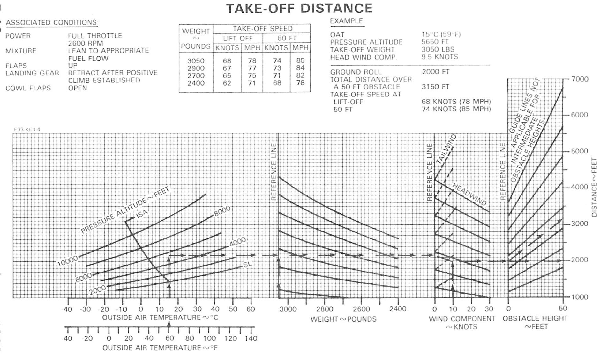

N7154N · Naperville Flying Club
1968 Beechcraft E33 Bonanza · Continental IO‑470‑K
Conditions
Cruise power setting
Computed setting
Certified POH settings at these conditions
| % Pwr | RPM | MP (inHg) | FF (GPH) | KTAS | KIAS |
|---|
Data source
RPM, manifold pressure, fuel flow, and TAS are interpolated directly from the certified Beechcraft Cruise Power Settings tables — Debonair C33 / Bonanza E33 & F33 Pilot's Operating Handbook, Section V Performance, pages 5‑21 through 5‑23 (August 1982 revision), at 55%, 65%, and 75% maximum continuous power, 2950 lb average cruise weight. The tables were transcribed from a scanned copy; spot‑check the figures below against your own copy if anything looks off.
Any other RPM or % power you dial in above is estimated, not tabulated: between 55% and 75% power, the app fits a manifold-pressure–vs–power line through the certified points at each RPM (using both 65% and 75% at 2450 RPM to get a real slope, and scaling that slope proportionally for other RPMs) and solves it for your requested % power. It lands exactly on the certified value whenever RPM and % power match a tabulated combination, and gets less certain the further you stray from 2300/2450 RPM.
Below 55% power (shaded red on the % power dial, 10–40%) is below every certified table entirely, so the cruise-range line above isn't a reasonable way to extrapolate — checked against basic engine physics (%BHP roughly proportional to manifold pressure at a fixed RPM), continuing that line down to 10% implied nearly 2.5× the requested power. Instead manifold pressure is scaled proportionally between the certified 55% point and an assumed closed‑throttle idle manifold pressure (~10.5 inHg), which is exact at 55% and stays physically sane as % power falls toward zero, but is a rougher estimate throughout — there's no published data down here to calibrate against.
RPM is limited to 1800–2450 and manifold pressure is checked against two limits: the recommended limits in the Manifold Pressure vs RPM chart, Section V pg 5‑26 (August 1982), a diagonal ceiling from about 21.4 inHg at 1800 RPM up to 24.0 inHg at 2450 RPM; and full throttle, taken from the cruise tables themselves — from 6,000 ft up, the cells where fuel flow drops below normal for that power are already at full throttle, and they give one manifold pressure per altitude (23.1, 21.7, 20.1, 18.6, 17.3, and 16.2 inHg at 6,000–16,000 ft), scaled by standard pressure below 6,000 ft.
Full-throttle (shaded) POH settings. Above roughly 6,000 ft some printed settings are already at full throttle and make less power than their table's title: the POH lists them with a lower fuel flow than the normal 9.8 / 11.5 / 13.4 GPH for 55 / 65 / 75%. Those normal flows are almost exactly proportional to power (a constant fuel burn per horsepower), so each printed fuel flow converts straight to the power it really makes — the 75% table's 11.1 GPH at 12,000 ft is about 62.6%, and 9.6 GPH at 16,000 ft about 54%. The % power dial always shows that actual power (to 0.1% when it isn't a whole number): the 75% preset at 12,000 ft sets 2450 RPM and 62.6%, with the printed manifold pressure, fuel flow, and airspeed, and the pane says you're in the full‑throttle area of the POH tables. The reference table below marks those rows the same way. Where the POH's 65% and 75% entries are the same full‑throttle setting but print slightly different numbers, the 75% figures are shown and the note gives the 65% ones.
Estimates between settings interpolate at the power each printed setting really makes. Full throttle at other RPMs is estimated from the shaded 2300 and 2450 RPM entries (at a fixed full‑throttle manifold pressure, power is roughly proportional to RPM; scaling one entry to the other's RPM this way lands within 1.5 percentage points). Asking for more power than that limits % power to the full‑throttle figure, with a message.
Turning the RPM dial never changes % power. If a lower RPM would put the current power out of limits, or you push past either end of the dial, the RPM stops at the last setting that still works and the pane says the RPM is at a limit. When % power, altitude, temperature, or altimeter setting changes and the setting goes out of limits, the app fixes it and says what it changed: over the pg 5‑26 ceiling, RPM is raised first; not obtainable at this altitude, % power is limited at the current RPM (the message says if a higher RPM would allow it).
Indicated airspeed is not tabulated in the POH chart — it's derived from the tabulated TAS using the standard density-altitude correction (KIAS ≈ KTAS × √σ), which ignores position error and is only an estimate.
The altitude/temperature grid covers sea level–16,000 ft pressure altitude and ISA −20°C to ISA +20°C. Conditions outside that range are clamped to the nearest edge of the chart, and the app will say so.
Conditions
Cruise power setting
Computed setting
Chart-derived settings at these conditions
| % Pwr | RPM | FF (GPH) | KTAS | KIAS |
|---|
Data source
N3008U is a Piper PA‑28‑181 Cherokee Archer II with a fixed‑pitch propeller and a Lycoming O‑360 (180 BHP) — there's no manifold pressure gauge or independent RPM control: you set power with the throttle, and engine speed is whatever results. So unlike N7154N, this page has a single control (desired % power) and computes the RPM you should see, along with fuel flow and airspeed.
Density altitude is computed exactly from pressure altitude and OAT using the standard formula (DA = PA + 120×(OAT°C − ISA°C at that pressure altitude)) — this part is exact, not read off a chart.
RPM and true airspeed are digitized from the two POH nomographs — Figure 5‑18 "Engine Performance" and Figure 5‑20 "Speed Power – Performance Cruise," Section 5 Performance, Report VB‑790 (issued 6/18/1976, revised 7/12/1977) — each a combined density‑altitude / performance carpet plot rather than a table of numbers. The app fits a straight line to each of the 55/60/65/70/75% RPM curves and each of the 55/65/75% airspeed curves against density altitude, calibrated against the charts' own worked examples (5,500 ft PA, 40°F, 65% power → 2,440 RPM; and 5,500 ft PA, 30°F, 55% power → 101 KTAS — both reproduced exactly). Reading values off a hand‑drawn nomograph is inherently less precise than the tabulated E33 data, so treat every number on this page as estimated. The chart is built wheel fairings installed and prints "subtract 8 kts if removed" — the Wheel Fairings switch above defaults to removed (N3008U's actual configuration) and applies that flat 8 kt to true airspeed, and to the indicated airspeed derived from it, whenever it's off.
Below 55% power (shaded red on the % power dial, 10–40%) is off both POH charts entirely — their fan lines simply stop at 55%. Rather than digitized chart data, this range is extrapolated with basic propulsion physics, anchored to land exactly on the certified 55% chart line at that boundary: RPM follows the fixed‑pitch propeller affinity law (BHP proportional to RPM³ at a roughly constant advance ratio), true airspeed follows the analogous power‑to‑speed cube relationship (BHP proportional to TAS³ at fixed drag), and fuel flow scales linearly with % power (roughly constant BSFC). This is a materially rougher estimate than the digitized 55–75% range above it.
Fuel flow (best power mixture, leaned per Lycoming instructions) comes directly from the POH's fuel‑flow table: 7.8/9.0/10.5 GPH at 55/65/75% power, with 6.3/7.6/8.8 GPH shown as the best‑economy alternative — this table isn't altitude/temperature dependent in the POH, so neither is this app's figure.
Indicated airspeed is derived from TAS using the standard density‑altitude correction (KIAS ≈ KTAS × √σ), same as the N7154N page — it ignores position error and is only an estimate.
The chart (and this page) cover roughly sea level–10,000 ft pressure altitude; the airspeed curves fold back over past their peak altitude on the real chart, so this page doesn't attempt to model beyond that range.
Conditions
Cruise power setting
Computed setting
POH power settings at these conditions
| % Pwr | MP (inHg) at RPM | FF (GPH) | KTAS | KIAS | ||||
|---|---|---|---|---|---|---|---|---|
| 2200 | 2300 | 2400 | 2500 | 2600 | ||||
Data source
Manifold pressure comes from the certified Power Setting Table — Lycoming IO‑540‑K Engine, PA‑32‑301 Saratoga Pilot's Operating Handbook, Section 5 Performance, Figure 5‑25 (Report VB‑1060, issued 1/9/1980, revised 10/7/1983): manifold pressure at 55%, 65%, and 75% power for 2200–2600 RPM in 100 RPM steps, sea level to 14,000 ft pressure altitude, at standard temperature. The app interpolates linearly between table rows and RPM columns, then applies the table's own temperature correction — 0.15″ Hg per 5°C above (add) or below (subtract) the table's standard altitude temperature. Any 100 RPM step at exactly 55/65/75% reproduces the table exactly and is labeled certified.
Two apparent misprints in the scanned table are corrected: 75% / 1,000 ft / 2300 RPM reads “20.6” in the POH, which is physically impossible between its 27.6 and 25.9 neighbors and is taken as 26.6 (on‑trend with every adjacent cell); and the row labeled “17000” sits between 11,000 and 13,000 ft with a −9°C standard temperature, so it's the 12,000 ft row.
Full throttle. The POH's “—” cells are settings that full throttle can't reach at that altitude. The app models full‑throttle manifold pressure as a fixed fraction of standard ambient pressure plus a small power‑dependent offset, fit to that boundary — it separates every printed value from every “—” in the table. When your setting needs more manifold pressure than full throttle provides (including on a hot day, per the POH note that full‑throttle values may not be obtainable in non‑standard conditions), the app adjusts: changing % power or the conditions raises RPM first, then lowers % power if even 2600 RPM isn't enough, and the pane says what it changed. On a cold day the temperature correction can bring a “—” cell back within reach; those cells are filled by extending each altitude row's manifold‑pressure–vs–RPM curve (shown with an asterisk below, and labeled estimated).
Turning the RPM dial never changes % power. If a lower RPM would need more manifold pressure than full throttle gives, the RPM stops at the last setting that still works and the pane says the RPM is at a limit. Below 2300 RPM the dial only goes as far as the POH power table publishes the setting: 55–75% power, using only printed cells (not “—”) at this altitude. Outside that it stops at 2300 RPM, with a notice. Pushing past either end of the dial (2200 or 2600 RPM) also shows a notice. Raising RPM is always allowed.
Any other RPM or % power is estimated: 50 RPM steps interpolate between table columns, and % power between 55, 65, and 75% interpolates between the three power tables. Below 55% (shaded red on the % power dial, 10–40%) is below the table entirely; manifold pressure continues the 55–65% line at each RPM, which follows basic engine physics (at fixed RPM, brake power is close to linear in manifold pressure above a friction‑loss intercept — extended to zero power, this table puts that intercept at about 7–12 inHg, a plausible value for a large six‑cylinder engine). It's a rougher estimate than the tabulated 55–75% range.
True airspeed is digitized from the Speed — Cruise Power chart, Figure 5‑29 (flaps up, mixture leaned to peak EGT, wheel fairings installed, 3,600 lb gross weight). Its 55/65/75% lines are straight in density altitude, and each was traced and fit individually; the app reproduces the chart's own worked example (6,000 ft, +6°C, 65% → 136 kt). Density altitude is computed exactly from pressure altitude and OAT. The chart prints “if wheel fairings are not installed subtract 8 kts” — the Wheel Fairings switch applies that. Below 55%, airspeed follows the power‑to‑speed cube relationship from the 55% line (same approach as the N3008U page). The chart covers roughly 0–14,000 ft density altitude; outside that it's clamped to the nearest edge.
Fuel flow is the POH's approximate fuel flow, 11.9/13.8/16.0 GPH at 55/65/75% (leaned to peak EGT), interpolated between those and scaled proportionally below 55% (those three points work out to an almost constant brake‑specific fuel consumption). Per the chart's note, leaning to 50°F rich of peak instead adds about 16% fuel flow and 2 kt; the fuel flow readout shows that figure too.
Indicated airspeed is derived from TAS using the standard density‑altitude correction (KIAS ≈ KTAS × √σ), the same as the other pages — it ignores position error and is only an estimate.
Conditions
Maximum effort takeoff · flaps 25°
Takeoff performance
Takeoff distance over 50 ft at these conditions
| Weight | Liftoff | Barrier | Distance (ft) by wind component (kt) | ||||
|---|---|---|---|---|---|---|---|
| 5 tail | 0 | 5 head | 10 head | 15 head | |||
Data source
Digitized from the Maximum Effort Takeoff Performance — Flaps 25° chart, PA‑32‑301 Saratoga Pilot's Operating Handbook, Section 5 Performance, Figure 5‑15 (Report VB‑1060, issued 1/9/1980, revised 8/4/1982). Associated conditions: 2700 RPM and full throttle before brake release, paved, level, dry runway. The chart gives distance to clear a 50 ft barrier; it doesn't give ground roll.
The app follows the chart's three steps the way you would read it. Temperature and pressure altitude: each of the six pressure‑altitude curves (sea level to 10,000 ft) was traced off a 600 dpi scan and fit as a smooth curve against OAT (typically within 5 ft of the traced line); altitudes between curves are interpolated. Weight: the seven straight guide lines from the 3,600 lb reference line to 2,600 lb were traced, and the app interpolates between neighbouring lines. Wind: likewise for the eight headwind lines (to 15 kt) and seven tailwind lines (to 5 kt) from the zero‑wind reference line. The result is read on the chart's 3‑blade propeller scale, N114EL's propeller; the chart's 2‑blade scale isn't used.
Checked against the chart's own worked example — 1,200 ft, 16°C, 3,480 lb, 10 kt headwind: the chart's arrows read about 1,780 ft after the first step, 1,690 after weight, and 1,450 ft (3‑blade) at the end; the app gives 1,784, 1,699, and 1,463. Expect the same few‑percent reading tolerance you'd get using the chart by hand, and treat every number here as estimated.
Liftoff and barrier speeds come from the chart's table (66/71 KIAS at 3,600 lb down to 58/61 at 2,600 lb), interpolated by weight.
Limits: the chart covers sea level to 10,000 ft pressure altitude, −40 to +40°C, 2,600–3,600 lb, up to 15 kt headwind or 5 kt tailwind, and its curves stop at about 4,300 ft on the first step. Outside that the app shows no distance rather than extrapolate. A pressure altitude below sea level uses the sea‑level curve, which slightly overstates the distance.
Conditions
Landing · flaps 40°, power off
Landing performance
Landing distance over 50 ft at these conditions
| Weight | Approach | Distance (ft) by wind component (kt) | ||||
|---|---|---|---|---|---|---|
| 5 tail | 0 | 5 head | 10 head | 15 head | ||
Data source
Digitized from the Landing Performance — Standard Wheels, Tires and Brakes chart, PA‑32‑301 Saratoga Pilot's Operating Handbook, Section 5 Performance, Figure 5‑43 (Report VB‑1060, issued 1/9/1980). Associated conditions: wing flaps 40°, power off, paved level dry runway, full stall touchdown, maximum braking. The chart gives the distance to land over a 50 ft barrier; it doesn't give ground roll.
The app follows the chart's three steps the way you would read it. Every line on this chart is straight, and each was fit from the scan to within about 1 ft (the tailwind lines to about 3 ft). Temperature and pressure altitude: the six pressure‑altitude lines (sea level to 10,000 ft); altitudes between lines are interpolated. Weight: the seven guide lines from the 3,600 lb reference line to 2,600 lb; the app interpolates between neighbouring lines, and below the lowest line it continues the same trend. Wind: the eight headwind lines (to 15 kt), interpolated the same way. The dashed tailwind lines (to 5 kt) are parallel, adding about 59 ft per knot.
Checked against the chart's own worked example — 400 ft, 24°C, 3,300 lb, 5 kt headwind, 1,490 ft: the app gives 1,493 ft (shown as 1,490). Expect the same reading tolerance you'd get using the chart by hand, and treat every number here as estimated.
Approach speed comes from the scale across the top of the chart's weight panel: 79 KIAS at 3,600 lb down to 76 KIAS at 2,600 lb, evenly spaced (78 at the example's 3,300 lb).
Limits: the chart covers sea level to 10,000 ft pressure altitude, −40 to +40°C, 2,600–3,600 lb, and up to 15 kt headwind or 5 kt tailwind. Its lines stop at about 2,040 ft at the top, and its distance scale starts at 1,000 ft. Off the top, the app shows no distance rather than extrapolate; below the scale it shows “under 1,000”. A pressure altitude below sea level uses the sea‑level line, which slightly overstates the distance.
Conditions
Takeoff · flaps up, full throttle, 2600 RPM
Takeoff performance
Ground roll / distance over 50 ft at these conditions
| Weight | Liftoff | 50 ft | Ground roll / over 50 ft (ft) by wind (kt) | ||||
|---|---|---|---|---|---|---|---|
| 10 tail | 0 | 10 head | 20 head | 30 head | |||
Data source
Digitized from the Take‑Off Distance chart, Debonair C33 / Bonanza E33 & F33 Pilot's Operating Handbook, Section V Performance, page 5‑18 (August 1982). Associated conditions: full throttle, 2600 RPM, mixture leaned to the appropriate fuel flow, flaps up, landing gear retracted after a positive climb is established, cowl flaps open.
The app follows the chart's four steps the way you would read it. Temperature and pressure altitude: the six pressure‑altitude curves (sea level to 10,000 ft) were traced off the scan and fit as smooth curves, within about 5 ft; altitudes between curves are interpolated. Weight: the seven curved guide lines from the 3,050 lb reference line to 2,400 lb, fit the same way. Wind: the seven straight headwind lines (to 30 kt) and seven dashed tailwind lines (to 10 kt, adding about 22%). That gives ground roll. Obstacle height: the eight straight lines from ground roll to the total distance over a 50 ft obstacle (about 1.6 to 1.9 times the ground roll). At every step the app keeps its proportional place between the two neighbouring guide lines. The scan resolves about 9 ft per pixel, so treat every number as estimated.
The chart's own worked example — 15°C, 5,650 ft, 3,050 lb, 9.5 kt headwind — prints a 2,000 ft ground roll and 3,150 ft over 50 ft. The app gives about 2,030 and 3,300 ft. Two things in how the example is drawn account for it. Its arrow leaves the altitude curves at about 2,160 ft, where exact interpolation between the 4,000 and 6,000 ft curves gives 2,190. And in the obstacle panel its arrow runs nearly parallel to the guide line below it instead of keeping its place between the two lines either side, which is worth about 100 ft. Starting from the example's own arrow, the app's wind step lands on 2,000 ft. The app's reading is the longer, more conservative one.
Liftoff and 50 ft speeds come from the chart's table (68/74 knots at 3,050 lb down to 62/68 at 2,400 lb), interpolated by weight.
Limits: each altitude curve is drawn over a limited temperature range (sea level from about −18 to 55°C; 10,000 ft from about −35 to 35°C). Warmer than a curve's end, the app shows no distance rather than extrapolate; colder than its start, it uses the curve's coldest point, which overstates the distance. The chart covers 2,400–3,050 lb, up to 30 kt headwind or 10 kt tailwind, a distance scale from 1,000 to 7,000 ft, and sea level to 10,000 ft pressure altitude (a pressure altitude below sea level uses the sea‑level curve). The chart's note applies: its obstacle guide lines aren't valid for obstacle heights between 0 and 50 ft.
Calculation drawn on the POH chart
